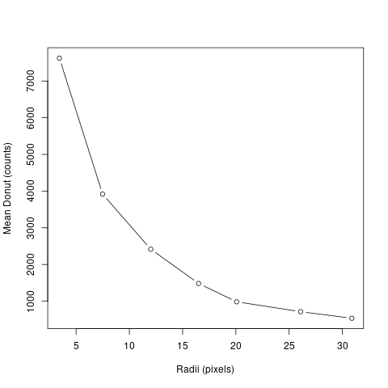
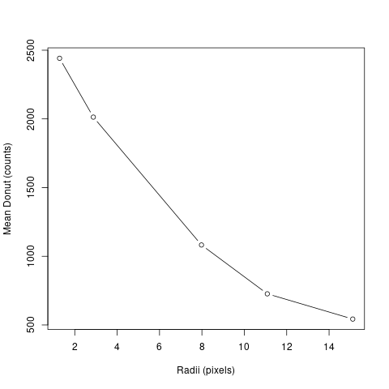
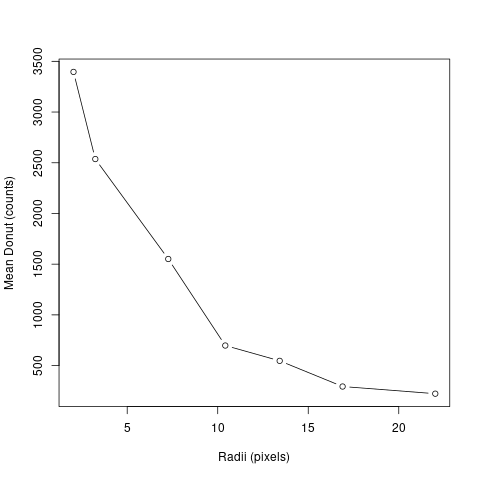
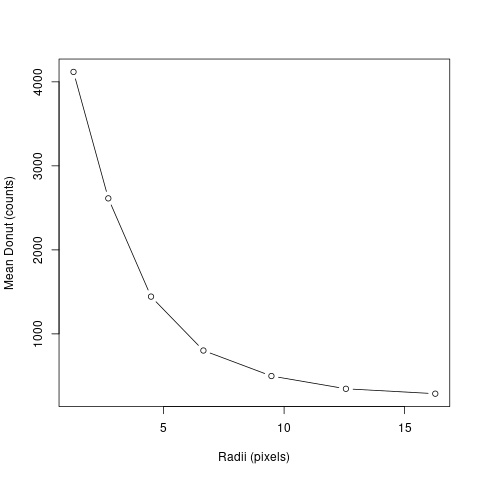
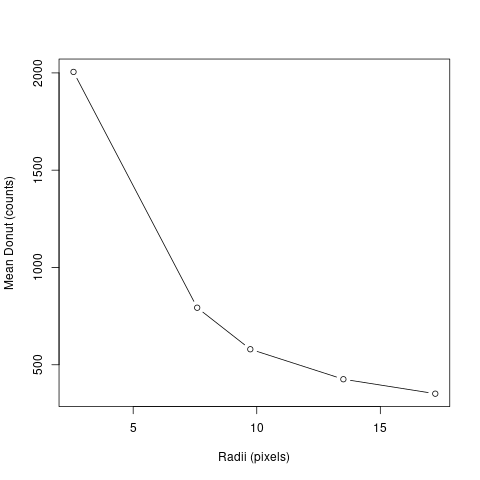
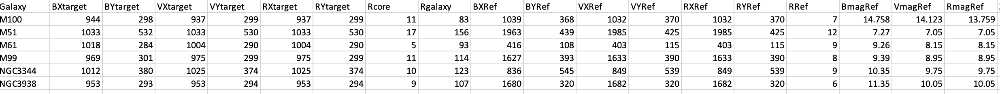

Original Approach: I orginally wanted to compare the the stellar population in the individual arms and the core of the different galaxies
This approach really underestimated the intricacies and ambiguity of galaxy arms
New Approach: I decided to reapproach my project my focusing on defining the boudnaries of the core for each galaxy
After determining the boundaries of each of the cores, I planned to compare the magnitude and B-V numbers or each of the galaxies in the core and 'not the core'
Defining the Core: I used the Change-Point statistical analysis test in R to determine the boundaries of the core
I used to the 'Region' tool in ds9 to gather information within a certain region in a given aperature
I created multiple aperatue regions of multiple sizes increasing from within the center of the core to extending beyond the galaxy
I inputed the values: radii, sum (of the total counts within the aperature region), number of pixels (within the aperature region) into an excel sheet
I calculated the mean of the counts just within the region between the larger aperature size and the previous aperature (a donut shape region)
I then ran this through the changepoint package in R to get several plots showing counts vs radii (pixels)
The plots (shown below) show a curve that eventually asymptotically approaches the x-axis --> this asymptotic appraoch is where the counts drop off enough to be what I considered the coundary of the core

M51 B filter - Radii (pixels) vs. Counts
M61 B filter - Radii (pixels) vs. Counts

M99 B filter - Radii (pixels) vs. Counts

M100 B filter - Radii (pixels) vs. Counts

NGC3344 B filter - Radii (pixels) vs. Counts

NGC3938 B filter - Radii (pixels) vs. Counts
Calculating Magnitudes and B-V values:
I used a Python package called photutils to perform photmetry on a given aperature defining the core and a donute aperture of 'not the core'
This package auto-identified regions of my image to perform photometry on, but I only wnated specific regions
So I inputed into and excel sheet specific regions defining the x/y values of the center of the core of each galaxy in B and V filters, the radius of the core in each filter for each galaxy, and the magnitudes and center of standard stars for each galaxy

Included in the photometry package, I added the following equation to calculate the magnitudes from the counts
B1 - B0 = 2.5log_10(CB0/CB1) where B=magnitudes of the star and C=counts/sec
I also added the below equation to calculate the B-V number
B1 - V1 = (B0 - V0) + 2.5log{CV1/CB1} - 2.5log{CV0 - CV0} where B and V corresponds to the different filters